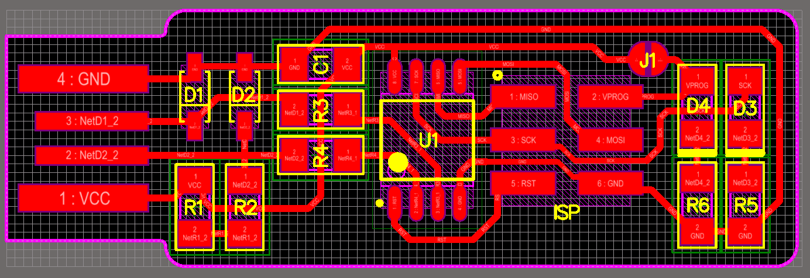

Electronics Production
This week, we are learning to do some basic electronics production, specifically creation of a PCB by milling, then stuffing the components and finally burning the code to it. This is something which I have never attempted before. As part of the assignments this week we need to make an in-circuit programmer (FabISP) by milling the PCB. The FabISP is an in-system programmer for AVR microcontrollers, designed for production within a FabLab. It allows us to program the microcontrollers on other boards we make in our coming weeks activities. We have chosen the FabTinyISP Minimal version which uses a ATtiny45.
PCB
A printed circuit board (PCB) mechanically supports and electrically connects electronic components using conductive tracks, pads and other features etched/milled from copper sheets laminated onto a non-conductive substrate. A basic building block of the PCB is an FR-4 panel with a thin layer of copper foil laminated to one or both sides.There are multiple ways of making the PCB. The most common techniques being etching and milling.
There are two ways of mounting the parts to the PCB. The Trough Hole Mounting:mounting technique involves different components which have lead wires that are led to the board through holes, hence the name. And in Surface Mount Technology(SMT), the leads are soldered on PCB surface directly rather than using hole mounting
There are two ways of mounting the parts to the PCB. The Trough Hole Mounting:mounting technique involves different components which have lead wires that are led to the board through holes, hence the name. And in Surface Mount Technology(SMT), the leads are soldered on PCB surface directly rather than using hole mounting
PCB Milling
In the lab we use PCB milling which is much quicker and less messier for protyping boards. We need the following tools for milling the PCB
The modela MDX-20 mill
The MDX-20 could be used to mill the traces, we should ensure that the mill is be ing attended while in operation, and also need to be aware of the small flying debris while the machine is in operation. The key controls of the machine are

Sacrificial Layer
We need a sacrificial layer here because in case something goes wrong and the milling bit goes further than expected, we might just end up damaging the base plate. The sacrificial layer as the name suggests sacrifices itself for saving the base plate from any damage.To do this we apply the dual sided tape onto a copper clad board, about the same or of greater size to that of the plate we are going to mill.
Setting the PCB
A PCB board of suitable size could be fixed on the sacrficial layer using double side tape. Care should be taken to evenly place the board, as any variations may cause cutting tool breakage. If the milling surface is not level then need to apply pressure gently on the raised areas, if that doesn’t work we need to redo the adhesive part, making sure that its level and uniformly distributed.
Attaching the milling bit
First we need to raise the milling head by using the ‘Tool-UP’ button on the Modela control panel. Using the Allen key, gently loosen the hex nut on the rotating part on the milling head, and gently remove the existing bit. Depending on the type of cut we need to select from 2 available bits. 1/64 for the traces and 1/32 for the border cut. While storing, we need to ensure that the bits should be placed in its appropriate container with the cap on. It is also a good idea to place a sponge(soft cloth) beneath the tool holder to ensure that the bit is not damage in case it falls while being removed.

Fab modules - The software interface to milling
There are two ways we could use this milling machine, either by using the offline ‘fab’ package, or the online fabmodules. In our lab, we have used the offline fab package for this assignment. The fab module could be launched by typing fab on the Ubunu Terminal. Then we need to chose PNG and modela MDX-20 as shown below.
The board layout, need to be available as an image (.png) file, having black and white coloring. The black portion of the board is removed by the miller and the white portion remains as the circuit trace. The layout used for this assignments are available here.

Setting the orgin
We need to set the origin so that the machine knows from where it should start the operation. This is also vital in order to select the desired area on the copper board on which to mill the PCB. First we need to select the ‘move to xmin, ymin’ option. This would move the milling head to the Zero (20,20 by default). Then by changing the values we could locate the orgin to the desired area. In my assignment, I shifted the orgin to (2,79), so as to mill on the available space at the top left corner. Then move the milling head down by using the ‘Tool-Down’ button on the front panel, till we reach about 0.5 cms above the milling surface. Now with the Allen key, gently loosen the hex-nut holding the bit such that the bit drops to the milling surface. Then fasten the nut. Now the milling bit should be resting just on the top of the milling surface, as seen in the image.
Milling the board
Select the ‘PCB traces’ option under the ‘process’ drop down. Adjust the cut depth to 0.1mm, which will mill away the copper. Then select the ‘calculate’ option.This will generate the tool path for the device.Go through the tool paths and see if all traces are available. It is interesting to note that if we give -1 as the offset value, then all the copper except the traces will be removed. Finally click the ‘send’ button to send the tool path to the device. And it will start cutting. A status window will be displayed, showing the time elapsed and remaining, and mine took about 10mins to mill the traces.
Vacuum the surface and then closely observe the traces and note the surface for any incomplete cuts.
If so redo the entire traces with a little more cut depth. Once the traces are ready, replace the bit with the 1/32 bit and repeat the same process with the border for cutting the board out. Be sure to use the ‘Cut out board’ option in the process dropdown. We have to use another .png file that looks like the one below to do the border cutting.
 Once this cutting is finished, we can remove the cut board from the mill.
Once this cutting is finished, we can remove the cut board from the mill.
Stuffing and Soldering

Once the board is milled the next task is stuff the boards with the parts. This could be done in the following steps.
The fabTinyISP needs the following parts:
It is important to note the orientation of the parts,
Once the soldering is done, we need to inspect it against the schematic and PCB layout image, and also check if the parts are all placed correctly and connection are soldered properly.
Programming the board
First we need to setup the enviorment. We used AVRDUDE, which is a utility to download/upload/manipulate the ROM and EEPROM contents of AVR microcontrollers using the in-system programming technique (ISP). For setting up the following command is entered on the terminal on Ubuntu.
sudo apt install avrdude gcc-avr avr-libc makeThen we need to download the firmware source code and extract and cd that path on a terminal window. Then we need to Run make. This will build the hex file that will get programmed onto the ATtiny45. When the command completes, we should have a file called fts_firmware.hex.
Then we need to connect another programmer, I have used the fabISP made by Ajith in our lab, to load the program to my fabISP. The Red LED will glow now. It should be noted that the boards are oriented in the same direction. Then we need to enter make flash on the terminal. This will erase the target chip, and program its flash memory with the contents of the .hex file we built before. We should see several progress bars while avrdude erases, programs, and verifies the chip.
After flashing we need to set the configuration fuses, which is done by entering make fuses on the terminal. This will set up all of the fuses except the one that disables the reset pin. Next we need to check the USB connectivity. This is done by typing lsusb in the terminal, which will list USB devices. And if we should see a "Multiple Vendors USBtiny" device, it worked correctly, and it did work for me right first time itself.
Now there are two final steps left to turn your board into a programmer that can program other boards. First, we need to change the bit that will turn the ATtiny45's reset pin into a GPIO pin. Once again, this will disable our ability to reprogram this ATtiny45 in the future, which is why we wanted to make sure everything was working before doing this. Connect the ISP programmer to the board one more time, and run make rstdisbl. This does the same thing as the make fuses command, but this time it's going to include that reset disable bit as well. We should see some progress bars, and with that, avrdude will never be able to talk to this chip again through the ISP header. And it has begun its life as a programmer alone.
Following are the commands and the progress messages I got on my terminal while programming my fabISP.
X - [ ] jim@jim-ThinkPad-T420:~/Downloads/fts_firmware_bdm_v1
Making the bus connector
A bus connector is required to connect the headers of the fabISP to another boardfor programming. This is made by taking a 1 foot long 6-strand ribbon wire and then snapping the 2 piece connector as shown in the animation below.
This weeks tasks were entirely new to me, evenhough I had some initial doubts on my ability to do the tasks like soldering, programming and all, I was able to complete all the tasks in time with good understanding. Thanks to the support by Yadu, Vishnu and Ajith, who enable me to be a proud owner of my first self made board, that too using surface mount parts.